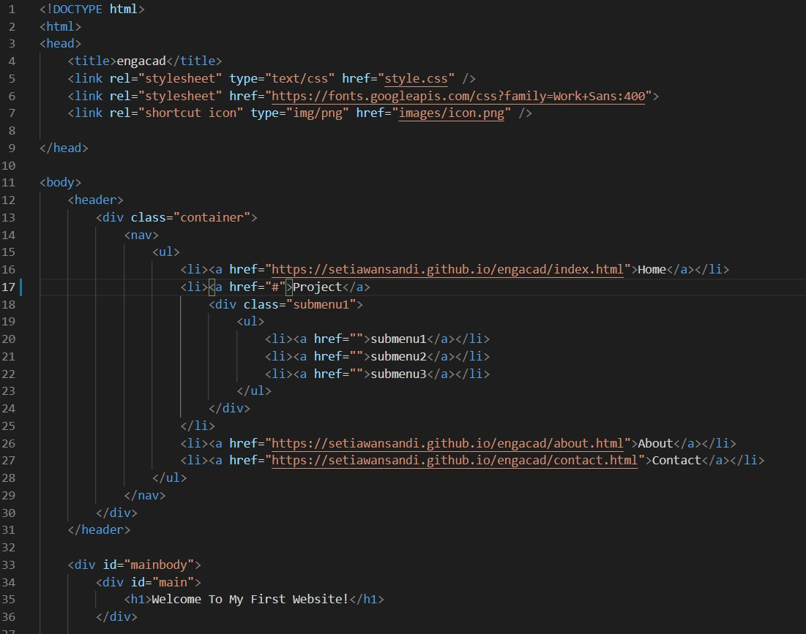
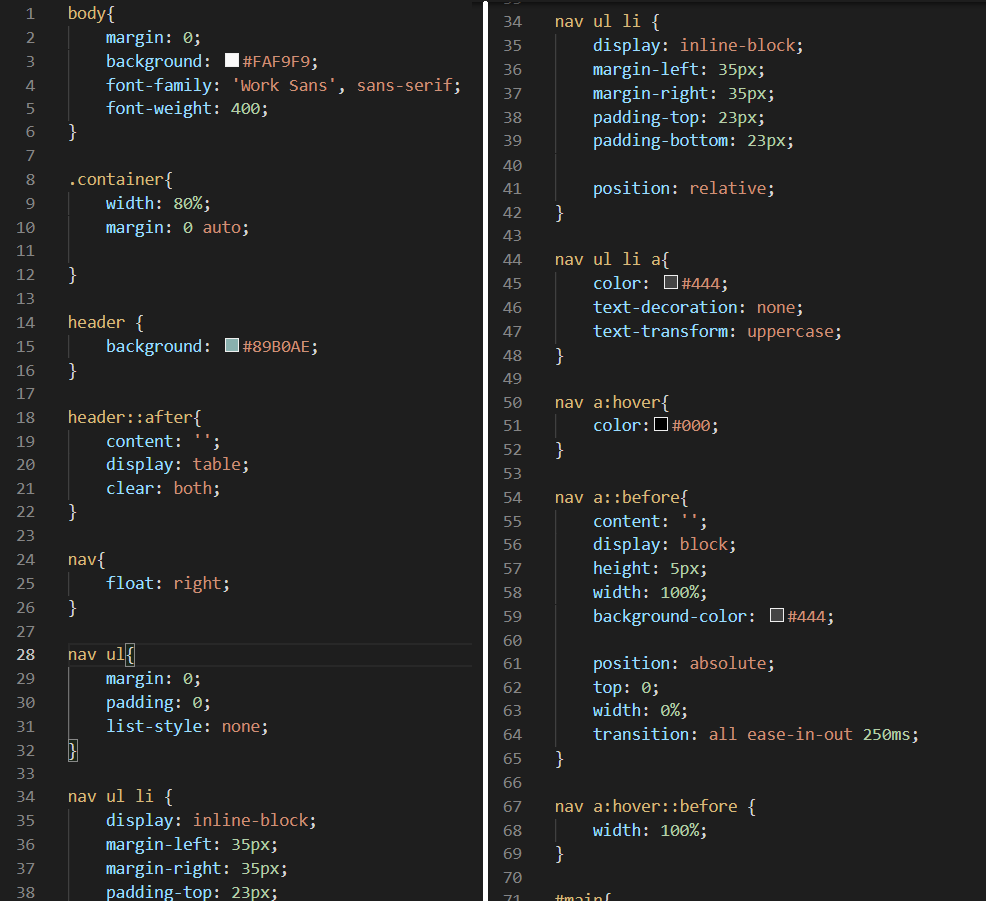
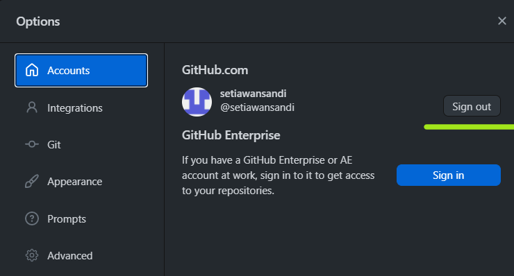
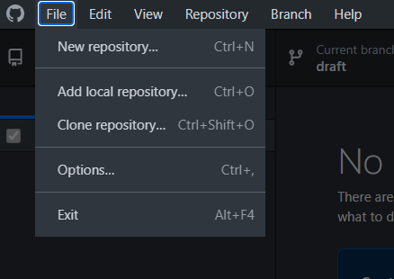
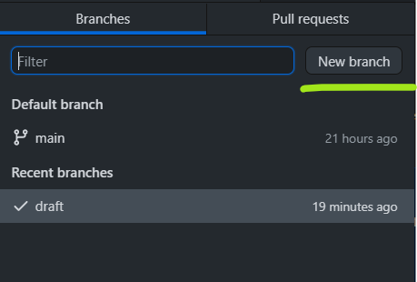
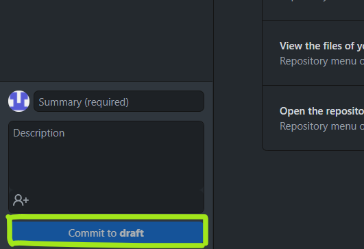
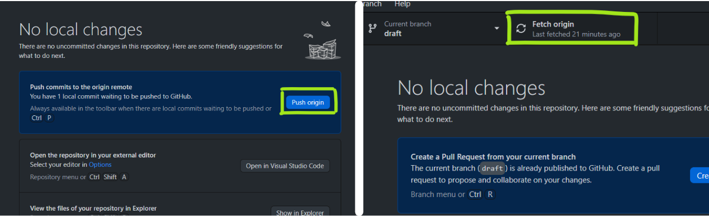
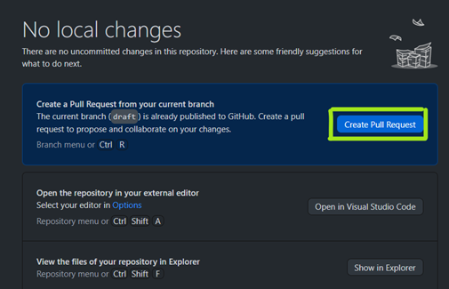

To start documenting you project on website you will need to use:
Plain text editors are software programs that save text as a plain (ASCII) text data file. We need pure text editors so that the code is readable across all platforms.
Example of these plain text editors are sublime text, visual studio code, and atom
HTML (Hypertext Mark-Up Language) is the standard markup language for Web pages. With HTML you can create your own Website. It also allows links (pointers) to other sites/material/images/video/audio.
Beginner course: Watch Jake Wright - Learn HTML in 12 minutes
CSS is the language we use to style an HTML document. CSS describes how HTML elements should be displayed. This is used to make the website neater and easy to navigate.
Beginner course: Watch: Learn CSS in 12 minutes
Example of the HTML and CSS used in building this website Navigation Bar:


Markdown is a way to style text on the web. You control the display of the document; formatting words as bold or italic, adding images, and creating lists are just a few of the things we can do with Markdown. Mostly, Markdown is just regular text with a few non-alphabetic characters thrown in, like # or *.
Markdown files have the extension of .md or .markdown. We can then subsequently convert markdown file to HTML file to be used on website.
Learning Markdown: Learn Markdown
Version control lets developers work through branching and merging.
| Branching | Merging |
|---|---|
| Duplicates part of a project to try changes | Allows a branch to overwrites the main code safely. |
| Can abandon and ignore changes. | Can recover if mistake occurs. |
| Changes do not affect the main project. |
1) GitHub Site
Set-up: Apply Git to Your Github Site (Using Window desktop)
Step 1: Installing and log in to you GitHub account
To sign in go to File > Options > Accounts and follow the steps to sign in.

Step 2: Contributing to projects with GitHub desktop
You can create (git init) , clone (git clone) or add local repository to your GitHub.
To do so, go to File drop down menu and u can choose the one you need.

Step 3: Making changes in a branch
You can use GitHub Desktop to create a branch of a project. Branches isolate your development work from other branches in the repository, so that you can safely experiment with changes.

After you make changes to a branch, you can review them in GitHub Desktop and make a commit to local repository to keep track of your changes. This is equivalent to git commit command.

As you commit changes to your project locally, you can push those changes to GitHub so that others may access them from the remote repository. This is equivalent to git push command. Alternatively, you can also fetch new commit from remote repository by clicking fetch origin button. This is equivalent to git fetch command.

Lastly. You can also create a pull request to propose the changes to the main branch.
